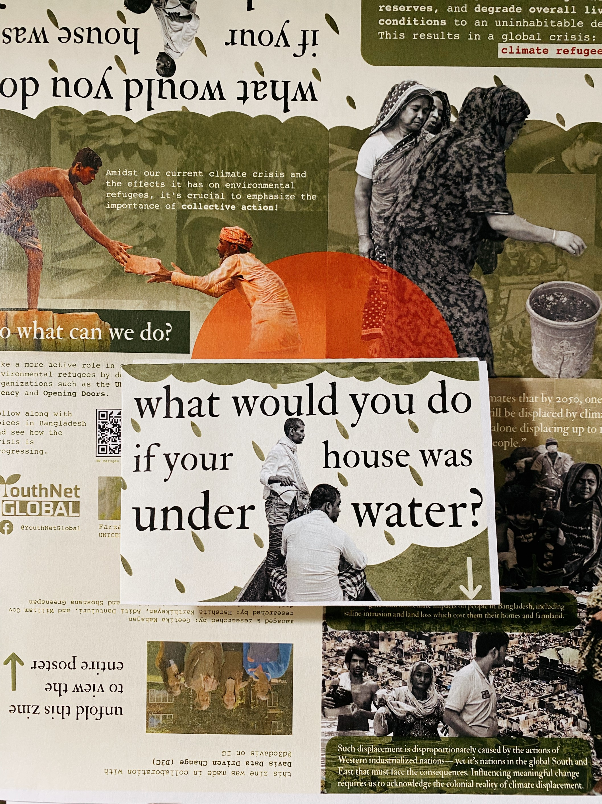
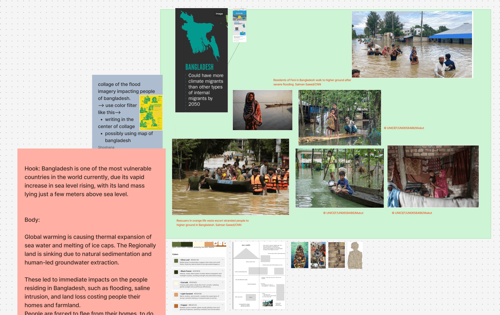
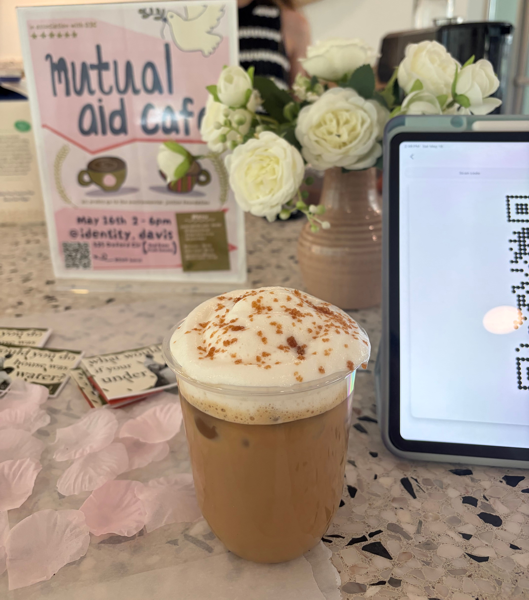

Davis Data Driven Change
ROLE
Designer on a team
TOOLS
Illustrator, Photoshop
SKILLS
Editorial Design
1OVERVIEW
Davis Data Driven Change (D3C) is a student organization that inspires social reform through collaborative art, design, tech, and research.
As a member of the International Human Rights team, our goal was to create and distribute a zine within Winter and Spring quarter. Our focus was on climate refugeeism in Bangladesh.
2GOALS & PIVOTS
Questions
a. How can we facilitate and provide community awareness and tangible support through our project?
We ideated with silhouettes, layered visuals, and imagery focused on raising awareness on a personal level, to humanize the data of those displaced.

Collecting inspiration and ideas.
3DEVELOPMENT
We wanted the zine to be able to fold out and have the ability to be used as a poster. We collaborated with our research team to create visually engaging, data-informed layouts and graphics.
The zine is sectioned into personal story, global impact, and ends on a hopeful note about the actions the audience can take to help.
I was tasked with the last section as well as assembling the entire zine and maintaining visual cohesiveness. We added arrows for guidance since our zine strays from how a typical zine flips.

Full zine flip through.
_
4VISUAL DESIGN
For our design system, we drew color inspiration from the Bangladeshi flag which features green and red. For our fonts, we used IM Fell Double Pica for headers and sub headers, and Courier for body copy. We kept fonts simplistic and legible since our zine would be printed on letter-sized paper.
Unfolding the zine into its poster form reveals the red circle in the center symbolizing the Bangladesh flag.

Thank you screen after donating our funds.

Coffee and zines!
5OUTCOMES & TAKEAWAYS
After distributing the zines around campus and Downtown, we hosted a pop-up mutual aid cafe with baked goods and coffee as a way to both further distribute the zine and to raise funds for the Environmental Justice Fund, who invest in local solutions that support communities most immediately harmed by the effects of climate change.
We ended the cafe with $200 raised.